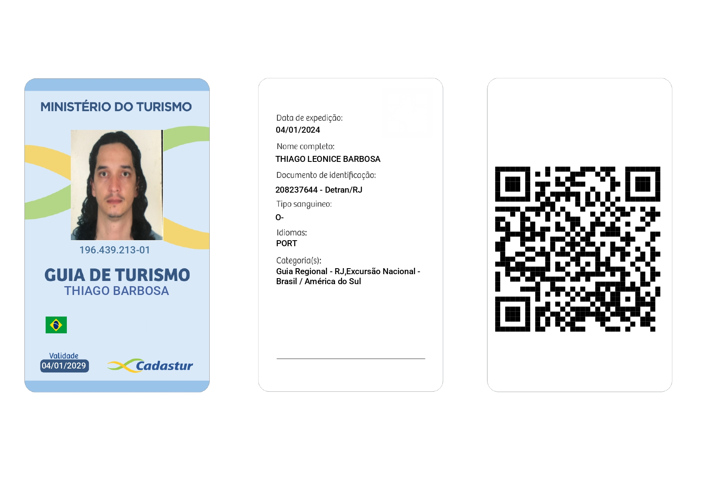
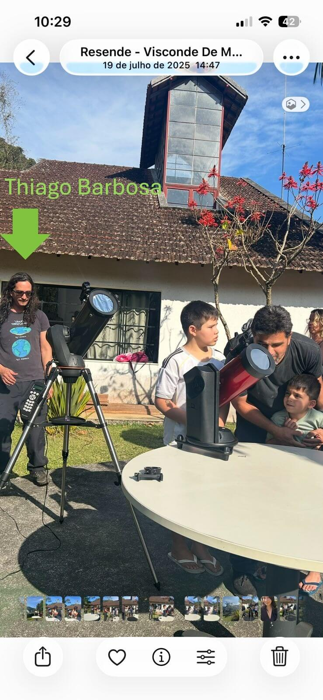
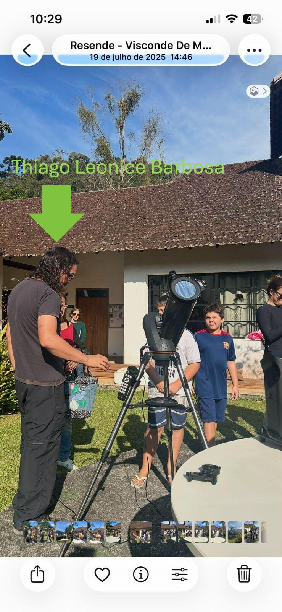

Edital Fluxos Fluminenses 2026 – Nº 09/2026 | SECEC/RJ
| Nome completo | Thiago Leonice Barbosa |
|---|---|
| Tipo de proponente | MEI – Microempreendedor Individual |
| Nome da Proposta | Céu da Mantiqueira: Astroturismo |
| CNAE principal | 7912-1/00 – Guia de turismo |
| Município de sede | Resende – RJ (Região do Médio Paraíba) |
| Formação técnica | Guia de Turismo CADASTUR | Astronomia UFSC | Astrofísica UFSC |
| Instagram profissional | @astroturismo.agulhasnegras |
Astronomia + Astrofísica
atendidos
PN Itatiaia + PEP Mauá
acessibilidade e baixo impacto
100% Gratuitos
1. MEMORIAL DESCRITIVO DA TRAJETÓRIA
🎯 "Unindo ciência, cultura e sustentabilidade para levar o céu do Pico das Agulhas Negras a todos, gratuitamente."
Sou Thiago Leonice Barbosa, Técnico em Turismo com registro no CADASTUR (Guia Regional - RJ e Excursão Nacional - Brasil/América do Sul) e com foco em Astronomia. Completei o Curso de Astronomia e Astronáutica (20h) e o Curso de Astrofísica Geral – nível Georges Lemaître (50h), onde estudei introdução à Astronomia, observação do céu, sistema solar, estrelas, galáxias, cosmologia e astrobiologia.
Minha trajetória artístico-cultural combina guia de montanha noturno, astrofotógrafo documental e educador ambiental, com embasamento científico sólido. Atuo há mais de 2 anos na região do Pico das Agulhas Negras, abrangendo a parte alta do Parque Nacional do Itatiaia (PN Itatiaia) e o Parque Estadual da Pedra Selada – PEP em Mauá (Visconde de Mauá, Resende/RJ). Ao longo dessa trajetória, já atendi diretamente mais de 50 participantes, promovendo não apenas a observação científica, mas também a preservação do Meio Ambiente.
Em 2023, participei da palestra "Ciência nas trilhas: desafios e potenciais para conservação da natureza", promovida pelo IFRJ Campus Avançado Resende, que aprofundou minha compreensão sobre a interface entre turismo de aventura, educação ambiental e conservação de Unidades de Conservação.
Também em 2023, fui contemplado com ingresso institucional pelo IFRJ para o Rio Innovation Week, um dos maiores eventos de tecnologia e inovação do Brasil (03 a 06 de outubro de 2023), onde atualizei conhecimentos sobre turismo 4.0, realidade aumentada aplicada à interpretação do céu noturno e gamificação para grupos.
2. SOBRE O PROJETO: "CÉU DA MANTIQUEIRA"
📋 O PROJETO EM NÚMEROS:
- 8 eventos presenciais de astroturismo – todos gratuitos e abertos ao público
- 4 localidades diferentes: PN Itatiaia (parte alta), PEP Mauá, Parque das Águas (Resende) e região do Pico das Agulhas Negras
- Acessibilidade garantida: Intérprete de Libras, áudio descrição, cadeira off-road e sinalização tátil
- Baixo impacto ambiental: sem fogueiras, sem luz branca, sem geração de lixo, louça reutilizável
- Público estimado: Mais de 100 participantes ao longo dos 8 eventos
Além dos eventos em Unidades de Conservação de altitude, realizei ações gratuitas de astroturismo urbano no Parque das Águas, em Resende (2024), abertas ao público geral, democratizando o acesso à ciência astronômica.
Todos os 8 eventos do projeto "Céu da Mantiqueira" serão 100% gratuitos, garantindo que pessoas de todas as condições socioeconômicas tenham acesso à observação do céu noturno, à astrofotografia e ao conhecimento científico. Acreditamos que a ciência e a cultura devem ser acessíveis a todos, sem barreiras financeiras.
Todos os meus eventos seguem protocolos de acessibilidade (adaptação para pessoas com mobilidade reduzida, materiais em áudio descrição, intérprete de Libras) e baixo impacto ambiental: sem fogueiras, sem lixo e sem luz branca.
3. FORMAÇÃO TÉCNICA E CIENTÍFICA
| Certificação | Instituição | Carga horária | Período | Tópicos principais |
|---|---|---|---|---|
| Curso Técnico de Guia de Turismo (CADASTUR) | CADASTUR / Detran-RJ | - | Registro 04/01/2024 | Guia Regional - RJ | Excursão Nacional - Brasil / América do Sul |
| Curso de Astrofísica Geral (Georges Lemaître) | UFSC – PROEX | 50h | 04/2018 a 04/2019 | Instrumentos astrofísicos, exoplanetas, Via Láctea, cosmologia, astrobiologia |
| Curso de Astronomia e Astronáutica (Galileu Galilei) | UFSC – PROEX | 20h | 09/2019 a 08/2020 | Observação do céu, Sistema Solar, estrelas, galáxias, foguetes, programa espacial brasileiro |
| Palestra: Ciência nas trilhas | IFRJ – Campus Resende | 1h | 23/03/2023 | Conservação da natureza, turismo de aventura, educação ambiental |
| Rio Innovation Week – 3ª edição | Rio Innovation Week / IFRJ | Evento | 03 a 06/10/2023 | Turismo 4.0, inovação, realidade aumentada, tecnologia |
4. REGISTRO FOTOGRÁFICO DAS AÇÕES REALIZADAS
📸 Imagens em ordem cronológica (da mais antiga à mais recente) - Total de 10 imagens
.jpeg)
Data: 03/10/2023 | Local: ThiagoBarbosa - Rio Innovation Week 2023 – Rio de Janeiro/RJ
Participação com ingresso institucional pelo IFRJ.

Data: 03 a 06/10/2023 | Local: Pier Mauá, Rio de Janeiro/RJ
Certificado oficial de participação na 3ª edição do Rio Innovation Week.

Data: 04/01/2024 | Local: CADASTUR / Detran-RJ
Crachá virtual de Guia de Turismo registrado no CADASTUR. Categorias: Guia Regional - RJ e Excursão Nacional - Brasil / América do Sul.

Data: 28/11/2024 | Local: Parque das Águas, Resende – RJ
Thiago Barbosa no evento aberto e gratuito de astroturismo urbano em parceria com o poder público municipal.
📷 Ver mais no Instagram @astroturismo.agulhasnegras

Data: 28/11/2024 | Local: Parque das Águas, Resende – RJ
Evento aberto e gratuito de astroturismo urbano. Público de diversas idades interagindo com os equipamentos.
📷 Ver mais no Instagram @astroturismo.agulhasnegras

Data: 09/12/2024 | Local: Pico das Agulhas Negras – PN Itatiaia
Postagem do perfil @astroturismo.agulhasnegras durante sessão de astrofotografia noturna.
📷 Ver mais no Instagram @astroturismo.agulhasnegras
.jpeg)
Data: 09/12/2024 | Local: Pico das Agulhas Negras – PN Itatiaia
Postagem com interação do público (@GEAN e amigos). Registro de engajamento e atividade presencial.
📷 Ver mais no Instagram @astroturismo.agulhasnegras

Data: 19/07/2025 | Local: PEP Mauá, Resende/RJ
Instrução do uso do telescópio com filtros adequados para observação de manchas solares.
📷 Ver mais no Instagram @astroturismo.agulhasnegras

Data: 19/07/2025 | Local: PEP Mauá, Resende/RJ
Grupo de participantes em atividade para observação de manchas solares.
📷 Ver mais no Instagram @astroturismo.agulhasnegras

Data: 19/07/2025 | Local: Visconde de Mauá, Resende/RJ
Instrumentação: Telescópio para observação solar e noturna.
📷 Ver mais no Instagram @astroturismo.agulhasnegras
5. LISTAGEM DE EVENTOS E FORMAÇÕES
| Data | Local / Evento | Tipo de atividade | Natureza |
|---|---|---|---|
| 04/2018 a 04/2019 | UFSC – Astrofísica Geral | Curso (50h) | Formação técnica |
| 09/2019 a 08/2020 | UFSC – Astronomia e Astronáutica | Curso (20h) | Formação técnica |
| 23/03/2023 | IFRJ – Ciência nas trilhas | Palestra (1h) | Formação complementar |
| 03 a 06/10/2023 | Rio Innovation Week – RJ | Participação (certificado) | Formação profissional |
| 04/01/2024 | CADASTUR – Registro de Guia de Turismo | Registro profissional | Formação técnica |
| 28/11/2024 | Parque das Águas, Resende | Astroturismo urbano | Gratuito / Público aberto |
| 09/12/2024 | PN Itatiaia (parte alta) | Observação e conservação da Natureza | Gratuito / Público aberto |
| 09/12/2024 | Pico das Agulhas Negras | Sessão de astrofotografia | Gratuito / Público aberto |
| 19/07/2025 | PEP Mauá | Observação de Manchas Solares | Gratuito / Público aberto |
6. EQUIPAMENTO UTILIZADO: CELESTRON NEXSTAR SLT 130
| ESPECIFICAÇÕES TÉCNICAS DO TELESCÓPIO | |
|---|---|
| Modelo | Celestron NexStar SLT 130 |
| Tipo óptico | Refletor Newtoniano |
| Abertura | 130 mm — alta captação de luz, ideal para céu profundo |
| Distância focal | 650 mm (f/5) — equilíbrio entre campo e ampliação |
| Ampliação útil máxima | 306x |
| Montagem | Alt-Azimutal motorizada (movimentos suaves nos eixos horizontal e vertical) |
| Banco de dados | Mais de 4.000 objetos (planetas, nebulosas, galáxias, aglomerados) |
| Tecnologia de alinhamento | SkyAlign — alinhamento com apenas 3 objetos brilhantes no céu |
| Controle | Manual computadorizado com display LCD e modo "Tour" (sugere automaticamente os melhores astros da noite) |
| Rastreamento | Automático — mantém o objeto centralizado mesmo em altas ampliações |
| Oculares utilizadas | 25 mm (26x) e 9 mm (72x) |
| Localizador | StarPointer (ponto vermelho) |
| Registro fotográfico | Smartphone acoplado à ocular (método afocal) |
| Alimentação | 8 pilhas AA ou fonte 12V |
| Peso aproximado | 8 kg (com tripé) |
✅ Diferencial: Telescópio que une qualidade óptica profissional com operação computadorizada simples, permitindo que pessoas sem experiência prévia participem das sessões de astroturismo e realizem registros astronômicos com o próprio celular.
7. REGISTROS ASTRONÔMICOS COM NEXSTAR SLT 130 + SMARTPHONE
📸 Imagens obtidas durante sessões gratuitas — método afocal (smartphone acoplado à ocular)
.jpeg)
📅 09 de dezembro de 2024 | 📍 Pico das Agulhas Negras – Parque Nacional do Itatiaia
🔭 Telescópio Celestron NexStar SLT 130 (130mm f/5) | Ocular 9mm | Método afocal com smartphone
🌌 Sessão gratuita de astroturismo — rastreamento automático mantendo o planeta centralizado mesmo em alta ampliação.
📷 Ver mais astrofotografias no Instagram @astroturismo.agulhasnegras

📅 09 de dezembro de 2024 | 📍 Pico das Agulhas Negras – Parque Nacional do Itatiaia
🔭 Telescópio Celestron NexStar SLT 130 (130mm f/5) | Ocular 9mm | Método afocal com smartphone
🌌 Registro das luas galileanas (Io, Europa, Ganimedes e Calisto) orbitando o gigante gasoso.
📷 Ver mais astrofotografias no Instagram @astroturismo.agulhasnegras
8. DOCUMENTOS COMPROBATÓRIOS (ANEXOS)
📄 Certificado UFSC – Astrofísica Geral (50h) – arquivo: 79399b88312bbea7b193e1a95de7ec84bb0fa3e5.pdf
📄 Certificado UFSC – Astronomia e Astronáutica (20h) – arquivo: 23e397efdeb45c5edf344bfba33109ff49a28d8b.pdf
📄 Certificado IFRJ – Ciência nas trilhas – arquivo: Certificado THIAGO L BARBOSA.pdf
📄 Certificado Rio Innovation Week 2023 – arquivo: Certificado RioWek Inovention_page-0001.jpg
📄 Crachá Virtual CADASTUR – Guia de Turismo – arquivo: CRACHA_VIRTUAL_page-0001.jpg
9. LINKS DE TRABALHOS ANTERIORES
📸 Instagram profissional: @astroturismo.agulhasnegras – registros de eventos noturnos, astrofotografias e depoimentos de participantes.
🔭 Formação UFSC: Astronomia e Astrofísica – base científica para condução de eventos de observação celeste.
🆔 CADASTUR: Guia Regional - RJ e Excursão Nacional - Brasil/América do Sul
📄 Portfólio completo online: 📂 Clique aqui para acessar o portfólio completo do proponente (documento atual em formato HTML/CSS, compatível com edital SECEC/RJ)
10. DECLARAÇÃO DE VERACIDADE
Declaro, sob as penas da Lei Federal nº 14.399/2022 e do Edital Fluxos Fluminenses 2026 nº 09/2026, que as informações, imagens e documentos apresentados neste portfólio são verdadeiros e correspondem fielmente à minha atuação profissional e formação técnica, incluindo os certificados da UFSC, IFRJ, CADASTUR e participação no Rio Innovation Week 2023.
Estou ciente de que a apresentação de informações falsas implicará a desclassificação imediata da proposta e as sanções administrativas previstas no item 18 do edital.
_________________________________
Thiago Leonice Barbosa
MEI – Técnico em Turismo
CADASTUR: Guia Regional - RJ | Excursão Nacional
Formação: Astronomia e Astrofísica pela UFSC